安裝Java
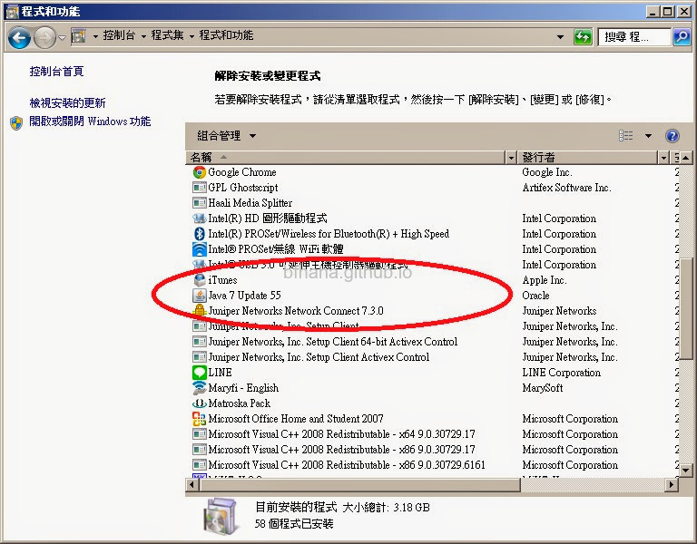
有一些網站教學說要下載JDK(Java SE Development Kit)，這個JDK是包含了開發工具，例如java編譯器，我們不需要這個，我們只需要可以執行java程式的環境就好。
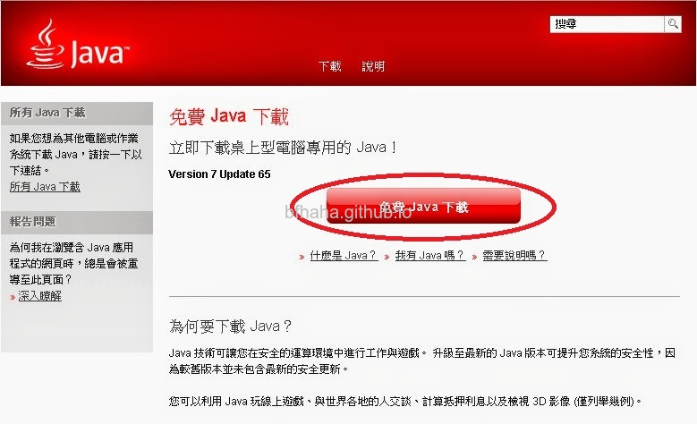
java，如果出現下圖的訊息就表示成功了。
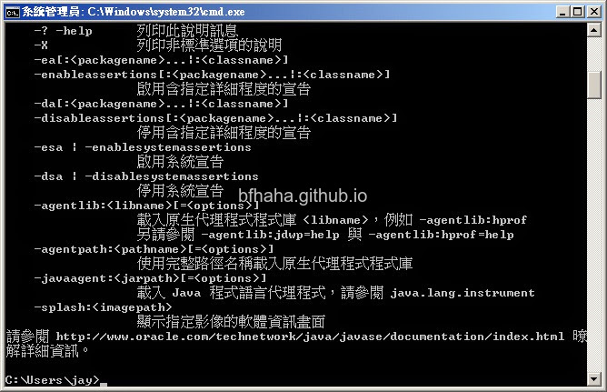
進入命令提示字元的方法如下。[開始＼所有程式＼附屬應用程式＼命令提示字元]，或是按[視窗鍵+R]，輸入
cmd，按下[確定]，視窗鍵就是鍵盤上Ctrl跟Alt中間的那個扭曲的窗戶。
'java' 不是內部或外部命令、可執行的程式或批次檔。這個訊息，就表示還要設定路徑。
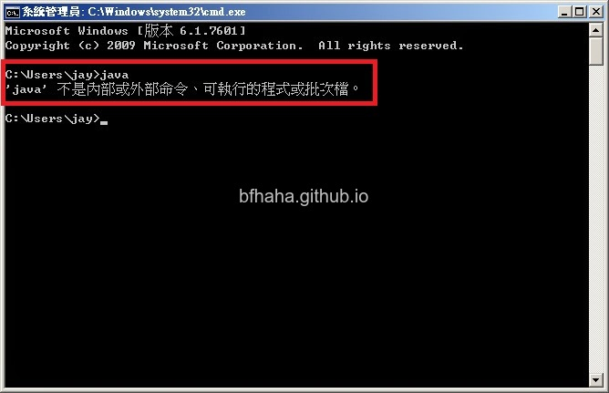
先去找java安裝在哪裡，通常會在這裡
C:\Program Files (x86)\Java\jre7\bin，你可以在這個bin資料夾中看到有一個java.exe的檔案，這時候將這個資料夾的完整路徑複製下來。在上方的網址列“最後面”點一下就會顯示當前資料夾的完整路徑。
在[我的電腦]上按右鍵，選擇[內容]，進入[系統]視窗後，選擇[進階系統設定]。
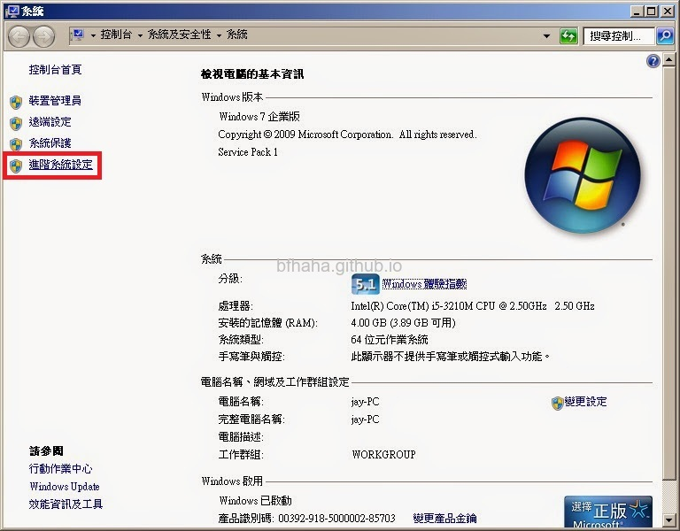
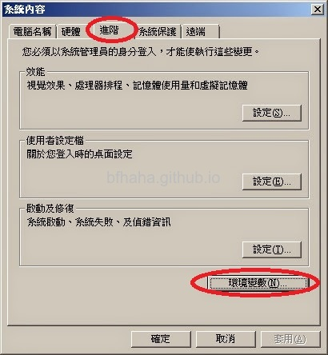
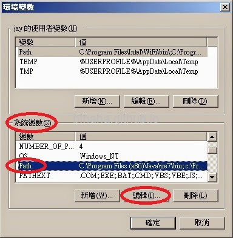

下載MySQL
現在已經出到5.7.20，而且叫MySQL Community Server。我當初下載的是5.1.73，安裝介面差異頗大。
請下載MSI Installer，不要下載ZIP Archive，因為ZIP Archive下載下來解壓縮的檔案頗複雜。
另外也要注意一下作業系統64-bit跟32-bit的差異，並下載相對應的版本。
5.1.73, 64-bit下載。
下載Navicat
現在出到Navicat Premium 12了，我當初用的是Navacat Premium 11。
Navicat Premium 11, 64-bit下載
網路上有人說可以下載免費的Navicat Lite，可是Navicat Lite也是要註冊，而且使用介面不太一樣，有點麻煩，不建議使用。
下載太陽神V14（含有db，補丁，登入器）
C:\太陽神V14資料夾中。
下載天堂3.52c主程式（免安裝）
其實這裡的免安裝版本就只是筆者在安裝天堂3.52c之後，把安裝天堂的資料夾
C:\Program Files (x86)\Gamania\天堂(Lineage 3.52C)\裡面的檔案全部複製出來並壓縮而成。因為筆者發現不用安裝天堂，只要有這些檔案其實就可以玩了。
安裝MySQL
新版的會讓你選擇要安裝哪些東西，而我們只要安裝Server的部分就好。在設定上也要設定成Server Machine。而且新版的MySQL Server在安裝前要先安裝Microsoft Visual C++ 2013 Redistributable Package (x86)，這個在Google上搜尋一下就可以找到並下載安裝。
安裝類型選[Typical]就好。接下來的設定都用預設的就好。
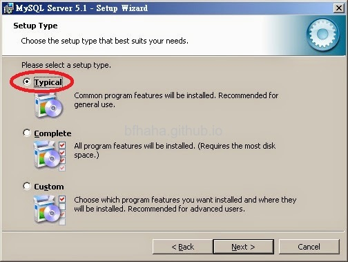
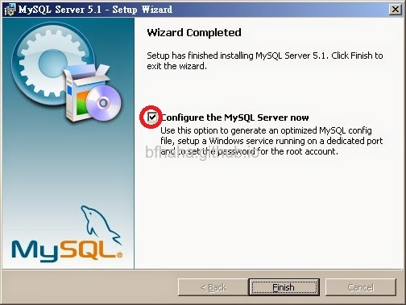
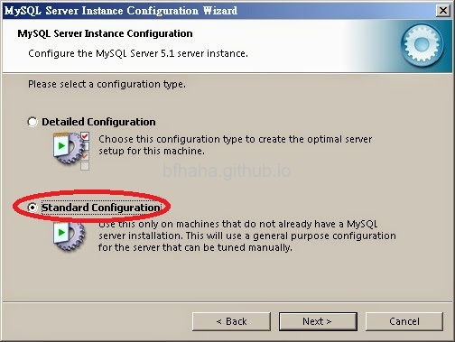
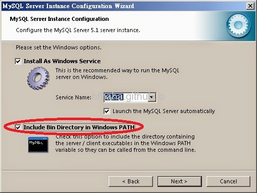
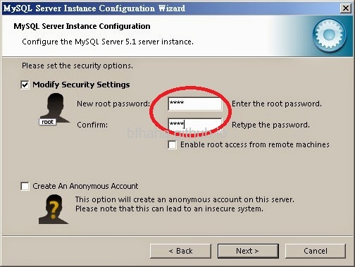

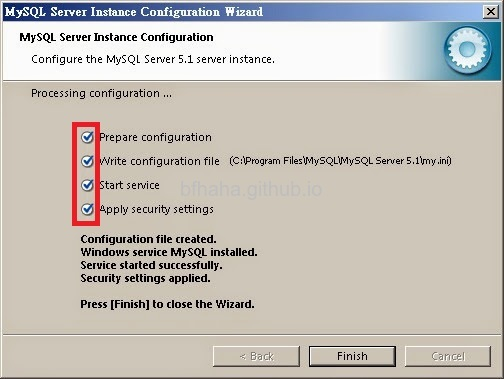
[狀況]：如果在最後一個步驟，打勾只打了前兩個[Prepare configuration]跟[Write configuration file]就當掉怎麼辦？
[解法]：強制關閉設定精靈後，再重新執行一次安裝程式，進行到下圖的步驟時，選擇[Remove Instance]來刪除之前的設定。接著到安裝MySQL的資料夾中，通常是在
C:\Program Files\MySQL\MySQL Server 5.1\bin，去執行一個MySQLInstanceConfig.exe，就能夠再進到設定的介面。
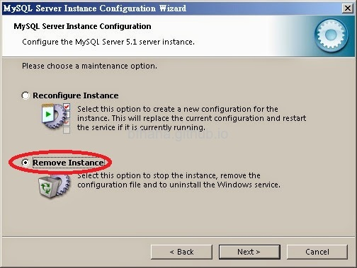
[狀況]：如果在最後一個步驟，前三個勾勾都完成了，要勾第四個[Apply security settings]時，卻出現下面的錯誤訊息。
[解法]：會產生這個錯誤的原因可能是因為有重新安裝過MySQL。到[控制台＼解除安裝程式]刪除MySQL，然後刪除安裝MySQL的兩個資料夾，通常一個會在
C:\Program Files\MySQL，另一個會在C:\ProgramData\MySQL。這個ProgramData資料夾是隱藏的，必須直接在網址列輸入路徑，或是先開啟[工具＼資料夾選項＼檢視＼顯示隱藏的檔案、資料夾及磁碟機]。這個解法是從這裡跟這裡學來的。
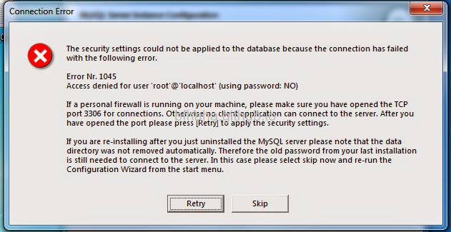
安裝Navicat
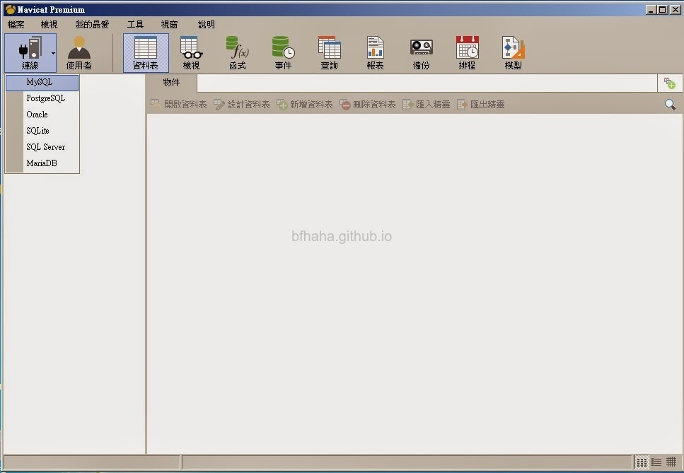
lineage_private_server，
[主機名稱或IP位址]預設是
localhost，不要改，
[埠]預設是
3306，也不要改，
[使用者名稱]預設是
root，不要改，
[密碼]輸入剛剛我們安裝MySQL時這步所輸入的密碼
root。
輸入完後按下連線測試，出現[連線成功]，按下[確定]，完成新增連線。
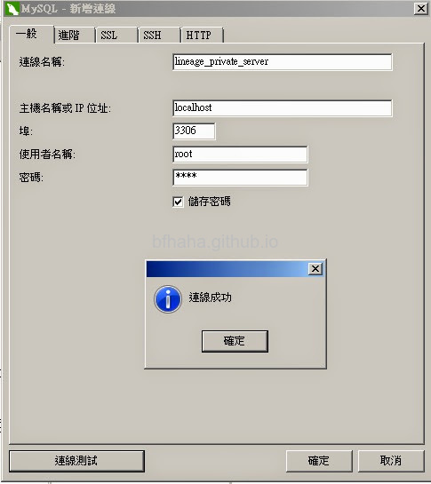
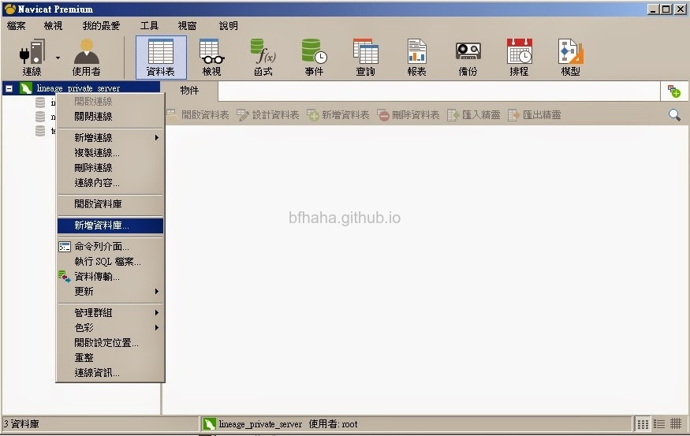
350c，這不能自己亂取，理由後面會說明，按下[確定]以新增資料庫。
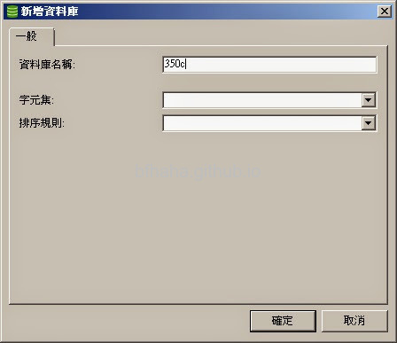
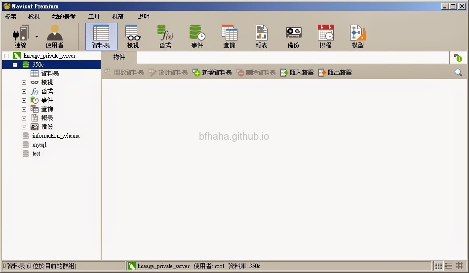
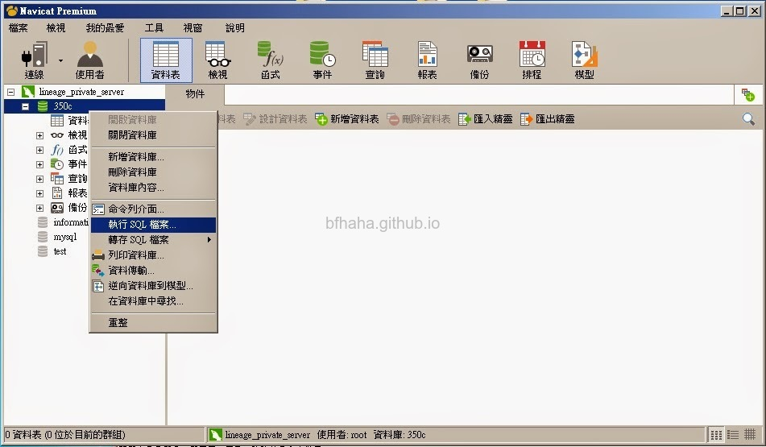
C:\太陽神V14資料夾中，所以在這裡就選擇C:\太陽神V14\db\太陽神v14_350C.sql這個檔案。
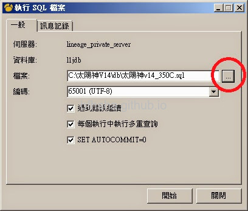
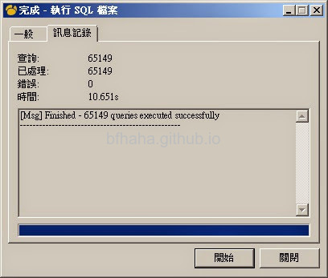
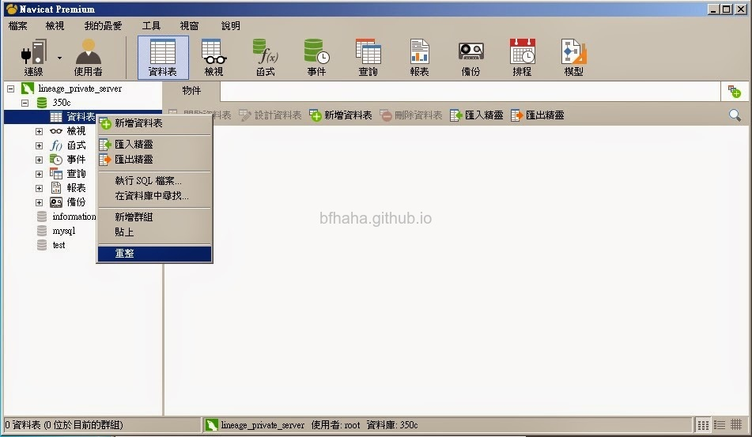
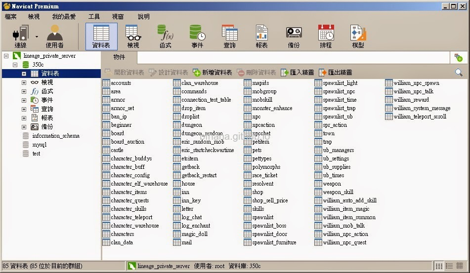
[狀況]：在Navicat中，既使刪除某個MySQL連線，再重新新增一個新的MySQL連線時，這個新的連線中的資料庫設定會跟剛剛之前的連線相同，就算重新安裝Navicat也一樣，如果想重置Navicat回到最原始的設定，該如何做呢？
[解法]：你必須連MySQL一起重新安裝。（或許你有其他更好的辦法。）
解壓縮天堂3.52c主程式
C:\lineage這個資料夾中
補丁，吃檔（這個步驟非必要）
把
C:\太陽神V14\補丁\1-執行及C:\太陽神V14\補丁\2-執行這兩個資料夾中的東西複製到我們放天堂主程式檔案的地方，也就是C:\lineage。
注意，是把資料夾“中”的東西複製過去，不是把整個資料夾複製過去，是複製
icon、map、sprite、Surf、text這五個資料夾“裡面”的東西過去。還有把C:\太陽神V14\補丁\吃檔程式.exe這個執行檔也複製到我們放天堂主程式檔案的地方，也就是C:\lineage
接著執行複製過去的
吃檔程式.exe，稍微等一下下，這時候可以看看福別問寫的數學文章。
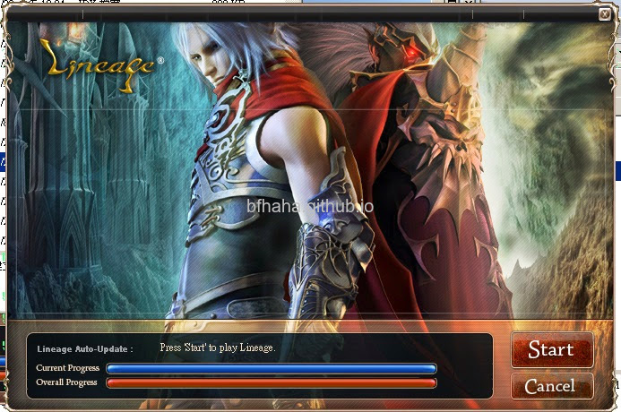
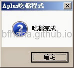
製作登入器
C:\太陽神V14\登入器 - by aplus\Login_v321編輯這個資料夾中的Encode.exe。
cannot find S3DS2X.txt這個訊息是正常的，按[確定]忽略它即可。）

IP維持預設的127.0.0.1，這表示你要先自己連到自己的電腦，我們後面會討論朋友要連進來的時候要怎麼修改。
版本選擇[351_S3DS2X]，
接著將右側的選項中[變身檔]、[內建喝水輔助程式]、[允許多開]三個選項打勾，其中變身檔選擇[S3DS2X.pak]，並按下[編碼]。
注意，其他的[封包加密]、[防外掛]、[進階防外掛]、[移動封包不加密]這些不要勾。
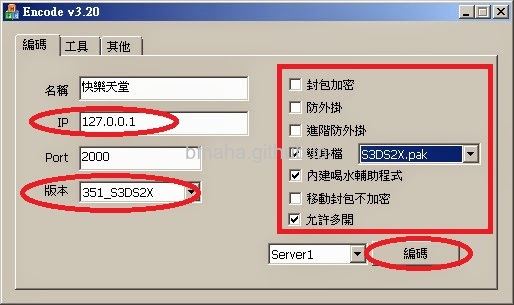
網路上有一些教學說這些選項要全部勾起來，但[封包加密]，[移動封包不加密]這些選項似乎會造成其他人無法順利連進來你的私服，會卡在登入畫面。
C:\太陽神V14\登入器 - by aplus\Login_v321編輯資料夾中的下列檔案複製到放置天堂主程式檔案的資料夾C:\lineage當中。
LinHelperZ.txt Login.cfg Login.exe Login.ini S3DS2X.bin S3DS2X.pak
C:\太陽神V14\登入器 - by aplus\Login_v321編輯這個資料夾中的pack.properties。然後把Autoentication=true中的true改成false。（這個Autoentication應該是拼錯，是Authentication才對。）接著要把編輯過的pack.properties放到C:\太陽神V14\config這個資料夾裡面，感謝網友Kelly Lin分享。
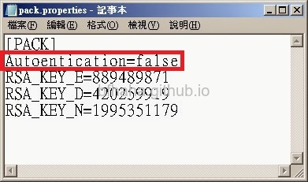
[狀況]：有一些人架了伺服器，結果別人卡在登入畫面連不進來。或是出現錯誤訊息
l1j.server.server.utils.StreamUtil close 嚴重: Connection reset by peer: socket write error ...... 客戶端連線結束IP 127.0.0.1 分流連線線程：1 客戶端連線開始IP /127.0.0.1[解法]：很可能就是之前沒有改成false，或是之前勾選了[封包加密]、[移動封包不加密]的選項。
啟動伺服器（黑盒子）
C:\太陽神V14資料夾當中的ServerStartC1.bat，讓他跑一下，出現下面畫面即表示成功，這在網路上大家稱為黑盒子。
注意到，啟動伺服器的時候其實不用打開Navicat。
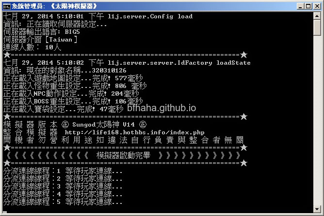
在這步解壓縮太陽神的時候，
ServerC.exe這個檔案可能會被你家的防毒軟體擋下來並刪掉，這時候執行ServerStartC1.bat的時候，就會出現'ServerC' 不是內部或外部命令、可執行的程式或批次檔。這個訊息，因為ServerStartC1.bat就是要執行ServerC.exe這個執行檔。這時候可以改執行ServerStartD1.bat。
[狀況]：一個常見的問題是，執行
ServerStartC1.bat時，卡在正在讀取伺服器設定...
[解法]：很有可能是Navicat中，連線密碼或是資料庫名稱設定的問題。請先確認連線的密碼為root，資料庫名稱為350c，資料庫名稱不要設定為l1jdb（有另一派教學是習慣設定成l1jdb）。你可以用記事本打開
C:\太陽神V14\config中的server.properties，裡面有一段記載著這些資訊。
# Database info Driver=com.mysql.jdbc.Driver URL=jdbc:mysql://localhost/350c?useUnicode=true&characterEncoding=big5 Login=root Password=root注意到localhost就是我們剛剛在Navicat中新增連線的
主機名稱或IP位址，350c就是我們新增的資料庫名稱，Login=root及Password=root就是新增連線時設定的使用者名稱及密碼。通常卡在正在讀取伺服器設定...，就是是密碼root或是資料庫名稱350c打錯造成。
其實如果要在Navicat中用其他密碼或其他資料庫名稱也可以，只是就要修改這個
server.properties檔案，但不建議這麼做，因為不知道有沒有其他檔案也用到這些設定。
[狀況]：另一個常見的問題是，執行
ServerStartC1.bat時出現下面的訊息：
Exception in thread "main" java.lang.NoClassDefFoundError: com/mchange/v2/c3p0/ComboPooledDataSource at l1j.server.L1DatabaseFactory.<init>(Unknown Source) at l1j.server.L1DatabaseFactory.getInstance(Unknown Source) at l1j.server.Server.main(Unknown Source) Caused by: java.lang.ClassNotFoundException: com.mchange.v2.c3p0.ComboPooledData或是一直閃爍。
[解法]：建立一個如下路徑的資料夾（必須完全相同），
C:\Program Files\Java\jdk1.7.0_05\lib，並將C:\太陽神V14\lib這個資料夾中的三個檔案c3p0-0.9.1.1.jar、javolution.jar、mysql-connector-java-5.1.5-bin.jar複製到剛剛建立的那個資料夾中。如果還是不行解決，試試使用jdk-7u5-windows-i586這個版本的Java，並且不要更新或升級。
開始遊戲
Login.exe，到這裡就可以開始自己一個人玩天堂了。如果想要讓朋友也可以連進來的話，請往後繼續看下去。第一次玩的時候帳號密碼可以自己任意輸入，密碼最少要8位，第二次要玩同一個帳號時就要輸入一樣的帳號密碼。
獲得固定IP
通常一般家庭向中華電信申請的網路都是浮動IP，就是重開機後IP就會變動，IP變動後，別人在網路上就找不到你的電腦了，所以我們要想辦法讓別人總是找得到你的伺服器，才可以連上來。
如果沒有用分享器的話，可以到下列網站申請一個域名，使用DDNS服務。
選擇一：http://www.noip.com/，
選擇二：http://freedns.afraid.org/，
選擇三：http://twbbs.org/，
簡單來說就是申請一個網址，例如xxx.ddns.net，然後在電腦上安裝一個軟體，這個軟體會隨時查看你的IP，然後把你的IP跟網址xxx.ddns.net連結在一起，別人只要找xxx.ddns.net就可以連到你現在的IP了。
如果你家裡有用IP分享器，或是你是用學校宿舍的網路，或是學校的無線網路，或是大樓的網路（就是牆壁上有一個網路孔，插上去就可以上網的那種），就沒辦法用上面的DDNS服務了，因為別人可以透過xxx.ddns.net連進來，但碰到分享器的時候，還是不知道要去哪裡找你的電腦。雖然可以設定IP分享器，但一般來說公用的分享器就不是我們有權限可以去設定的。
所以我的解決方法，就是使用LogMeIn Hamachi這套軟體。
安裝設定LogMeIn Hamachi（伺服器端）
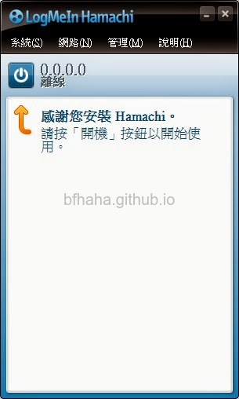
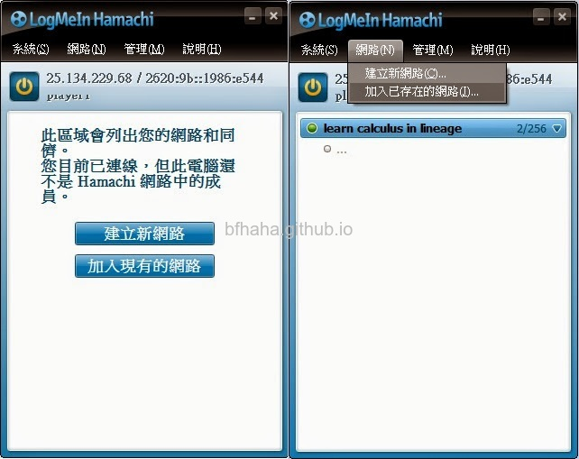
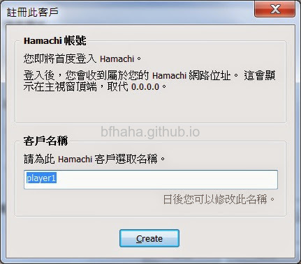
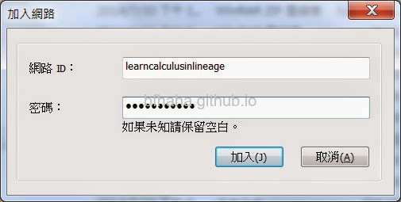
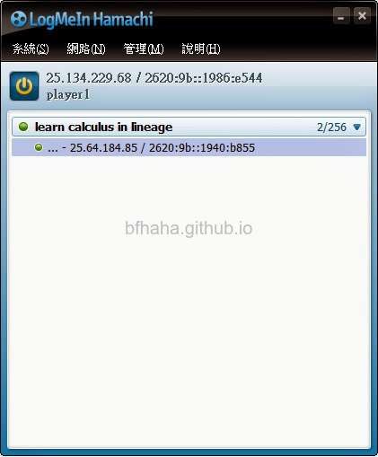
準備要給玩家的東西
LinHelperZ.txt Login.cfg Login.exe Login.ini S3DS2X.bin S3DS2X.pak
這五個檔案，加到剛剛下載的免安裝版天堂主程式的壓縮檔中的
lineage資料夾當中，下圖只是示範加入的方法，不是實際資料夾。（注意，是放在lineage資料夾當中，不是跟lineage資料夾放一起）
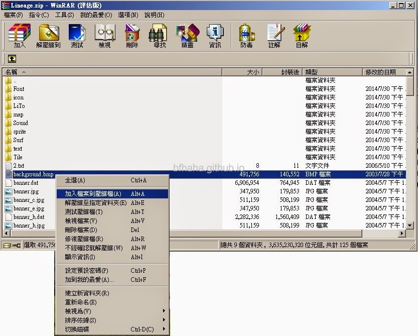
lineage.zip壓縮檔（含有Login.exe），放到Google drive或是Dropbox上供朋友下載。
如果你是從頭一直看下來的，也就是你剛剛已經架過伺服器，也已經從自己的電腦連進來，創了一個角色，玩了一下天堂，那這時候你的天堂主程式資料夾中就會多了一些檔案，尤其是有幾個以你的角色ID為檔案名稱的檔案，這時侯就不建議你把設定為新的外連IP的Login.cfg及Login.exe，覆蓋掉原本IP設定為127.0.0.1的Login.cfg跟Login.exe，然後再把整個資料夾重新壓縮。
安裝設定LogMeIn Hamachi（客戶端）
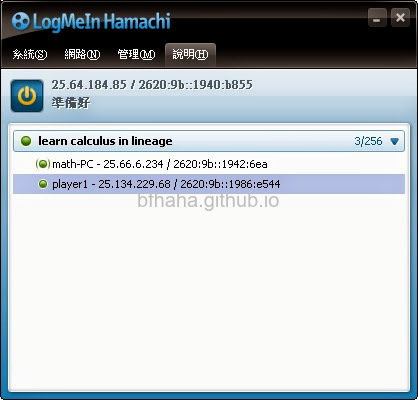
登入伺服器
lineage.zip（含Login.exe），也就是這步中增加了登入器的天堂主程式壓縮檔。下載之後解壓縮，執行Login.exe就可以開始遊戲了。

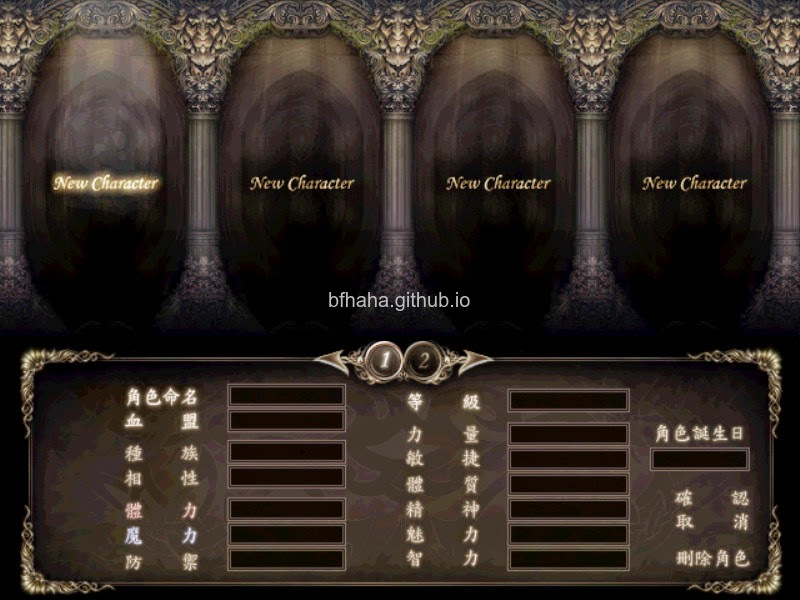
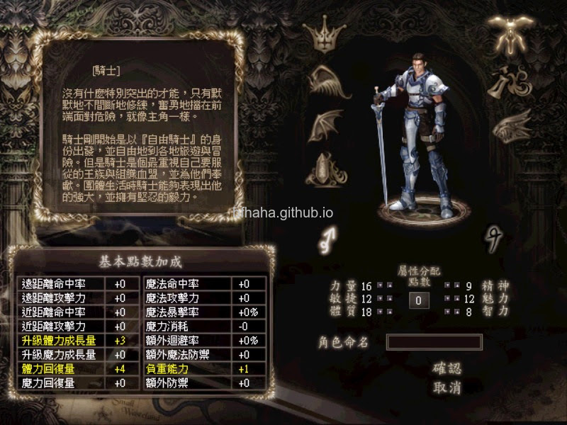